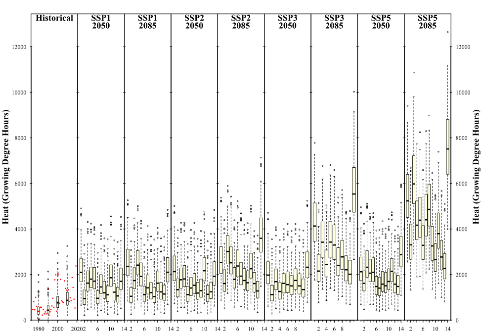

15 Chapter 16 - Making CMIP6 scenarios
This is by far the most difficult chapter. I struggled a lot during the making. There are many steps which are directly connected to each other and depend on each other. Furthermore the commands take a very long time. Sometimes its processed, but something went wrong. Then you have to start all over again. But I learned a lot doing this!
Looking at the exercises, they are straight forward. I have to make plots out of the data, we downloaded, the historic data and also observed data.
As I have mentioned in previous chapters getting the data for Klagenfurt was not that easy. Lots of weather data was missing. I had to combine and patch. Somehow a whole year was missing even though it said that 100 Perc is covered.
15.1 Code
Here is the code for downloading and extracting:
Code
library(chillR)
library(dplyr)
library(purrr)
#Defining the parameters
area <- c(47.2, 13.7, 46.0, 14.9)
location <- c(14.31, 46.62)
#Downloading
download_cmip6_ecmwfr(
scenarios = c("ssp126","ssp245","ssp370","ssp585"),
area = area,
user = "s7kaklei@uni-bonn.de",
key = "1afb14e0-c553-4dad-a6b4-da0773314f7b",
model = "default",
frequency = "monthly",
variable = c("Tmin","Tmax"),
year_start = 2015,
year_end = 2100
)
download_baseline_cmip6_ecmwfr(
area = area,
user = "s7kaklei@uni-bonn.de",
key = "1afb14e0-c553-4dad-a6b4-da0773314f7b",
model = "match_downloaded",
frequency = "monthly",
variable = c("Tmin","Tmax"),
year_start = 1986,
year_end = 2014,
month = 1:12
)
# Fixing the code (by Lars Caspersen)
extract_cmip6_data_mod <- function (stations, variable = c("Tmin", "Tmax"), download_path = "cmip6_downloaded",
keep_downloaded = TRUE)
{
assertthat::assert_that(all(variable %in% c("Tmin", "Tmax",
"Prec")))
assertthat::is.dir(download_path)
assertthat::assert_that(all(c("station_name", "longitude",
"latitude") %in% colnames(stations)))
assertthat::assert_that(is.numeric(stations$longitude))
assertthat::assert_that(is.numeric(stations$latitude))
if (system.file(package = "ncdf4") == "") {
stop("You need to have the package ncdf4 installed for the function to work properly.")
}
# if (system.file(package = "PCICt") == "") {
# stop("You need to have the package PCICt installed for the function to work properly.")
# }
stations$longitude <- stations$longitude
stations$longitude_mod <- stations$longitude + 360
sub_dirs <- list.dirs(download_path)
if (length(sub_dirs) > 1) {
path_download_vector <- sub_dirs[2:length(sub_dirs)]
}else {
path_download_vector <- download_path
}
download_path <- path_download_vector[1]
#start of loop
all_weather <- purrr::map(path_download_vector, function(download_path) {
#download_path <- path_download_vector[1]
if (length(path_download_vector) > 1) {
download_path %>% stringr::str_split(pattern = "/") %>%
purrr::map_chr(2) %>% cat("-------------------------------\n",
"area: ", ., "\n-------------------------------\n\n")
}
fnames <- list.files(path = download_path, pattern = ".zip")
extends <- stringr::str_split(fnames, "_") %>% purrr::map(function(x) x[(length(x) -
3):(length(x))] %>% gsub(x = ., pattern = ".zip",
replacement = "") %>% as.numeric()) %>% unique() %>%
purrr::map(function(x) data.frame(lat_high = x[1],
lon_low = x[2], lat_low = x[3], lon_high = x[4])) %>%
bind_rows()
if (any(extends$lon_low > stations$longitude | extends$lon_high <
stations$longitude) | any(extends$lat_low >
stations$latitude | extends$lat_high < stations$latitude)) {
drop_station_id <- which((extends$lon_low > stations$longitude |
extends$lon_high < stations$longitude) |
(extends$lat_low > stations$latitude | extends$lat_high <
stations$latitude))
stations_extract <- stations[-drop_station_id, ]
if (nrow(stations_extract) == 0) {
stop("After dropping stations not covered by the downloaded files no more stations are left to work with.\nStopping the extraction")
}
} else stations_extract <- stations
cat("Unzipping files\n")
if (length(fnames) > 0) {
fnames_fullname <- list.files(path = download_path,
pattern = ".zip", full.names = TRUE)
f_index <- purrr::map(tolower(variable), grep, fnames) %>%
unlist()
f_occur <- fnames %>% magrittr::extract(f_index) %>%
substring(first = 6) %>% table() %>% data.frame() %>%
stats::setNames(c("id", "freq")) %>% dplyr::filter(.data$freq ==
length(variable))
purrr::walk(f_occur$id, function(f) {
index_match <- grep(pattern = f, fnames_fullname)
purrr::walk(index_match, function(ind) {
take_f1 <- grep(pattern = "\\.nc$", utils::unzip(fnames_fullname[ind],
list = TRUE)$Name)[1]
unzip_f1 <- utils::unzip(fnames_fullname[ind],
list = TRUE)$Name[take_f1]
utils::unzip(zipfile = fnames_fullname[ind],
files = unzip_f1, exdir = download_path)
})
}, .progress = TRUE)
}
fnames <- list.files(download_path, pattern = ".nc")
fnames_fullname <- list.files(path = download_path,
pattern = ".nc", full.names = TRUE)
varname_nc <- factor(variable, levels = c("Tmin", "Tmax",
"Prec"), labels = c("tasmin", "tasmax", "pr")) %>%
as.vector()
f_index <- purrr::map(varname_nc, grep, fnames) %>%
unlist()
. <- NULL
f_occur <- fnames %>% magrittr::extract(f_index) %>%
gsub(pattern = paste(varname_nc, collapse = "|"),
replacement = "", x = .) %>% table() %>% data.frame() %>%
stats::setNames(c("id", "freq")) %>% dplyr::filter(.data$freq ==
length(variable))
index_match_list <- purrr::map(f_occur$id, function(f) grep(pattern = paste0(varname_nc,
f, collapse = "|"), fnames_fullname))
cat("Extracting downloaded CMIP6 files\n")
#loop over matched pairs
all_weather <- purrr::map(f_occur$id, function(f) {
#f <- f_occur$id[1]
index_match <- grep(pattern = paste0(varname_nc,
f, collapse = "|"), fnames_fullname)
#loop over the individual files
Datatemp <- purrr::map(index_match, function(ind) {
#ind <- index_match[1]
split_name <- fnames[ind] %>% strsplit("_")
variable_1 <- split_name[[1]][1]
gcm <- split_name[[1]][3]
ssp <- split_name[[1]][4]
#loop over stations
Datatemp_raw_1 <- purrr::map(1:nrow(stations_extract),
function(i) {
#i <- 1
# --- Versuch 1: exakte Koordinate ---
tmp <- try(suppressWarnings(
metR::ReadNetCDF(
file = fnames_fullname[ind],
vars = variable_1,
subset = list(
lon = stations_extract[i, "longitude"],
lat = stations_extract[i, "latitude"]
)
)
))
error_read_file <- inherits(tmp, "try-error") || is.null(tmp)
# --- Versuch 2: nächstgelegener Modellpixel ---
if(error_read_file){
nn <- nearest_lonlat(
fnames_fullname[ind],
stations_extract[i, "longitude"],
stations_extract[i, "latitude"]
)
tmp <- metR::ReadNetCDF(
file = fnames_fullname[ind],
vars = variable_1,
subset = list(
lon = nn$lon,
lat = nn$lat
)
)
}
#check if there was an error, if so do the error routine in the end
#if not do something else
error_read_file <- FALSE
if (inherits(tmp, "try-error")) error_read_file <- TRUE
if(error_read_file == FALSE){
if(is.null(tmp)){
tmp <- metR::ReadNetCDF(file = fnames_fullname[ind],
vars = variable_1,
subset = list(lon = stations_extract[i, "longitude_mod"],
lat = stations_extract[i, "latitude"]))
}
}
if(is.null(tmp)) error_read_file <- TRUE
if(error_read_file){
warning(paste("Failed to properly read file:",
fnames_fullname[ind]), "\nreturned NULL instead")
return(data.frame(ssp = ssp, model = gcm,
location = stations_extract$station_name[i],
as.Date(NA), lat = stations_extract$latitude[i],
lon = stations_extract$longitude[i]))
}
tmp$location <- stations_extract$station_name[i]
tmp$model <- gcm
tmp$ssp <- ssp
return(tmp)
})
if (nrow(Datatemp_raw_1[[1]]) != 1) {
Datatemp_raw_1 %>% dplyr::bind_rows() %>%
stats::na.omit()
}else {
Datatemp_raw_1[[1]]
}
}) %>% purrr::compact() %>% purrr::reduce(left_join,
by = c("time", "lat", "lon", "location", "model",
"ssp")) %>% dplyr::mutate(Month = lubridate::month(as.Date(.data$time)),
Year = lubridate::year(.data$time), Date = lubridate::date(.data$time),
Day = lubridate::day(.data$time))
if ("tasmax" %in% colnames(Datatemp)) {
Datatemp$Tmax <- round(Datatemp$tasmax - 273.15,
digits = 4)
}
if ("tasmin" %in% colnames(Datatemp)) {
Datatemp$Tmin <- round(Datatemp$tasmin - 273.15,
digits = 4)
}
if ("pr" %in% colnames(Datatemp)) {
Datatemp$Prec <- round(Datatemp$pr * 60 * 60 *
24, digits = 4)
}
if (all(variable %in% colnames(Datatemp))) {
return(Datatemp %>% dplyr::select("Date", "Year",
"Month", "Day", "lat", "lon", "location",
"model", "ssp", dplyr::all_of(variable)))
}
else {
return(Datatemp)
}
}, .progress = TRUE)
names(all_weather) <- purrr::map_chr(all_weather, function(x) paste0(unique(x$ssp),
"_", unique(x$model)))
all_weather <- purrr::map(all_weather, function(x) if (nrow(x) ==
1)
return(NULL)
else x)
})
all_weather_combined <- purrr::map(all_weather, names) %>%
unlist() %>% unique() %>% purrr::map(function(n) purrr::map(all_weather,
function(l) l[[n]]) %>% dplyr::bind_rows())
names(all_weather_combined) <- purrr::map(all_weather, names) %>%
unlist() %>% unique()
extracted_stations <- purrr::map(all_weather_combined, function(t) unique(t$location)) %>%
unlist() %>% unique()
if (any(!stations$station_name %in% extracted_stations)) {
warn_station <- which(!stations$station_name %in% extracted_stations)
warning("The supplied location: ", paste(stations$station_name[warn_station],
collapse = ", "), " were not covered by any of the downloaded files. Consider adjusting the \"area\" argument when downloading the files.")
}
if (keep_downloaded == FALSE) {
unlink(paste0(download_path, "/"), recursive = TRUE)
}
return(all_weather_combined)
}
# Extracting data from grid
station <- data.frame(
station_name = "Klagenfurt",
longitude = 14.31,
latitude = 46.62
)
extracted <- extract_cmip6_data_mod(
stations = station,
variable = c("Tmin","Tmax"),
download_path = "cmip6_downloaded"
)
# extracting relevant information
change_scenarios <- gen_rel_change_scenario(extracted)
head(change_scenarios)
#saving
write.csv(change_scenarios, "data/all_change_scenarios_klagenfurt.csv", row.names = FALSE)
scen_list <- convert_scen_information(change_scenarios)
scen_frame <- convert_scen_information(scen_list)
# getting different scenarios
klagenfurt_weather <- readRDS("data/klagenfurt_temps.rds") # oder dein Pfad
klagenfurt_temps <- klagenfurt_weather[, c("Year","Month","Day","Tmin","Tmax")]
# Must fail
temperature_generation(klagenfurt_temps,
years = c(1973, 2019),
sim_years = c(2001, 2100),
scen_list$Klagenfurt$ssp126$`ACCESS-CM2`)
# Correction
temps_1996 <- temperature_scenario_from_records(klagenfurt_temps, 1996)
temps_2000 <- temperature_scenario_from_records(klagenfurt_temps, 2000)
base <- temperature_scenario_baseline_adjustment(temps_1996, temps_2000)
base
# Creating unstructured baseline
scen_list_unstructured <- convert_scen_information(change_scenarios, give_structure = FALSE)
adjusted_list <- temperature_scenario_baseline_adjustment(
base,
scen_list_unstructured,
temperature_check_args = list(scenario_check_thresholds = c(-5, 15))
)
# Generating and saving futre data
dir.create("data/future_climate_klagenfurt", recursive = TRUE, showWarnings = FALSE)
for(scen in 1:length(adjusted_list)) {
out_file <- paste0("data/future_climate_klagenfurt/Klagenfurt_futuretemps_",
scen, "_", names(adjusted_list)[scen], ".csv")
if(!file.exists(out_file)) {
temp_temp <- temperature_generation(
klagenfurt_temps,
years = c(1973, 2019),
sim_years = c(2001, 2100),
adjusted_list[scen],
temperature_check_args = list(scenario_check_thresholds = c(-5, 15))
)
write.csv(temp_temp[[1]], out_file, row.names = FALSE)
print(paste("Processed object", scen, "of", length(adjusted_list)))
}
}
temps <- load_temperature_scenarios("data/future_climate_klagenfurt",
"Klagenfurt_futuretemps")
# frost model function and generation of future data
frost_model <- function(x)
step_model(x,
data.frame(
lower = c(-1000, 0),
upper = c(0, 1000),
weight = c(1, 0)))
models <- list(Chill_Portions = Dynamic_Model,
GDH = GDH,
Frost_H = frost_model)
chill_future_scenario_list <- tempResponse_daily_list(temps,
latitude = 46.62,
Start_JDay = 305,
End_JDay = 59,
models = models)
chill_future_scenario_list <- lapply(chill_future_scenario_list,
function(x) x %>%
filter(Perc_complete == 100))
save_temperature_scenarios(chill_future_scenario_list,
"data/future_climate_klagenfurt",
"Klagenfurt_futurechill_305_59")
# Chill Historic plot
chill_hist_scenario_list<-load_temperature_scenarios("data",
"Klagenfurt_hist_chill_305_59")
observed_chill <- read_tab("data/Klagenfurt_observed_chill_305_59.csv")
chills <- make_climate_scenario(
chill_hist_scenario_list,
caption = "Historical",
historic_data = observed_chill,
time_series = TRUE)
plot_climate_scenarios(
climate_scenario_list = chills,
metric = "Chill_Portions",
metric_label = "Chill (Chill Portions)")15.2 Plots
Heat

Figure 15.2: Growing Degree Hours (GDH) for SSP 1,2,3 and 5, for the years 2050 and 2085.
15.2.1 Code for plotting
Code for plotting the data into two different plots observing the chill and heat in all scenarios:
Code
SSPs <- c("ssp126", "ssp245", "ssp370", "ssp585")
Times <- c(2050, 2085)
list_ssp <-
strsplit(names(chill_future_scenario_list), '\\.') %>%
map(2) %>%
unlist()
list_gcm <-
strsplit(names(chill_future_scenario_list), '\\.') %>%
map(3) %>%
unlist()
list_time <-
strsplit(names(chill_future_scenario_list), '\\.') %>%
map(4) %>%
unlist()
for(SSP in SSPs)
for(Time in Times)
{
# find all scenarios for the ssp and time
chill <- chill_future_scenario_list[list_ssp == SSP & list_time == Time]
names(chill) <- list_gcm[list_ssp == SSP & list_time == Time]
if(SSP == "ssp126") SSPcaption <- "SSP1"
if(SSP == "ssp245") SSPcaption <- "SSP2"
if(SSP == "ssp370") SSPcaption <- "SSP3"
if(SSP == "ssp585") SSPcaption <- "SSP5"
if(Time == "2050") Time_caption <- "2050"
if(Time == "2085") Time_caption <- "2085"
chills <- chill %>%
make_climate_scenario(
caption = c(SSPcaption,
Time_caption),
add_to = chills)
}
# plotting frost
info_frost <-
plot_climate_scenarios(
climate_scenario_list=chills,
metric="Frost_H",
metric_label="Frost hours",
texcex=1.5)
#plotting heat
info_heat <-
plot_climate_scenarios(
climate_scenario_list = chills,
metric = "GDH",
metric_label = "Heat (Growing Degree Hours)",
texcex = 1.5)